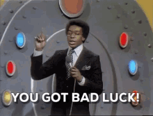

Projections lied to some of you. Let's see who.
Sorted by Diff (actual minus projected) — biggest overachievers on top, for max drama
| Team | Manager | Proj | Actual | Diff | Grade | Res |
|---|---|---|---|---|---|---|
| Kenz VishusLicks | Ken Glover | 224.2 | 279.85 | +55.7 | A+ | W |
| Hurt Me Moore | Joydip Joy | 260.6 | 300.6 | +40.0 | A | W |
| MaHOMELANDER | Kevin Guest | 264.5 | 297.4 | +32.9 | A- | L |
| Waddle On Deez Nuts | Lucas McMahon | 235.9 | 256.45 | +20.6 | B+ | W |
| Catchy Football Name | McCarty | 234.7 | 254.95 | +20.3 | B | L |
| Texas Determined Domination | Kolby Gilseth | 235.6 | 227.55 | -8.0 | B- | L |
| Big PeNIX Envy | Ryan Guest | 240.6 | 227.9 | -12.7 | C+ | W |
| Nabers ate my Zombies | JJ | 242.4 | 224.4 | -18.0 | C | W |
| Donuts All Day 24/7 | Alby | 233.2 | 196.1 | -37.1 | D+ | L |
| Covfefe is for Closers | David Pannell | 259.2 | 190.8 | -68.4 | F | L |
Grade reflects performance vs. this team's own projection, not raw score — beating a low projection can outgrade a loss, and blowing a big one while still winning can still land a C.
Note: MaHOMELANDER and Hurt Me Moore both spent their one-time optimizer this week, so both totals are post-optimization (Hurt Me Moore's 300.6 includes 20.0 that isn't tied to any player in the box score). Grades use the official totals.
Ken's best week of the season came from everywhere at once: Tetairoa McMillan scored 54.2 on a 19.8 projection, Bryce Young added 47.65 at OP, Kenneth Walker III had 40.65, and Tee Higgins had 35.7. 279.85 is a season high, it's three straight wins, and it comes from a team this newsletter graded a C- on draft day. Somewhere a reach is looking pretty good.
The worst miss in the league, by 31 points. David's five best-projected starters (Chase, Barkley, Love, Smith-Njigba, and Watson) were supposed to give him 117.2 points and gave him 46.5. Barkley (hamstring) and Chase (concussion after a facemask) were both injured early in their games, which explains most of the damage, and Love is currently listed questionable. Three more running backs on his roster (Brooks, Mason, and Price, who cost $26 last week) are on injured reserve. Romeo Doubs scored 28.55 on the bench. 190.8 and a loss is the least surprising part.
